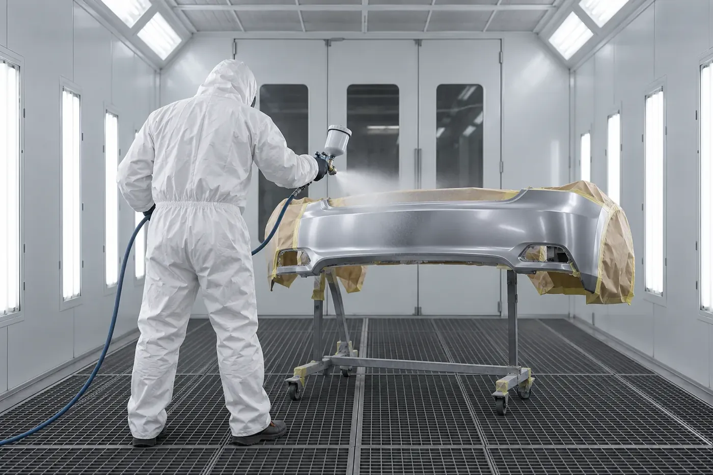
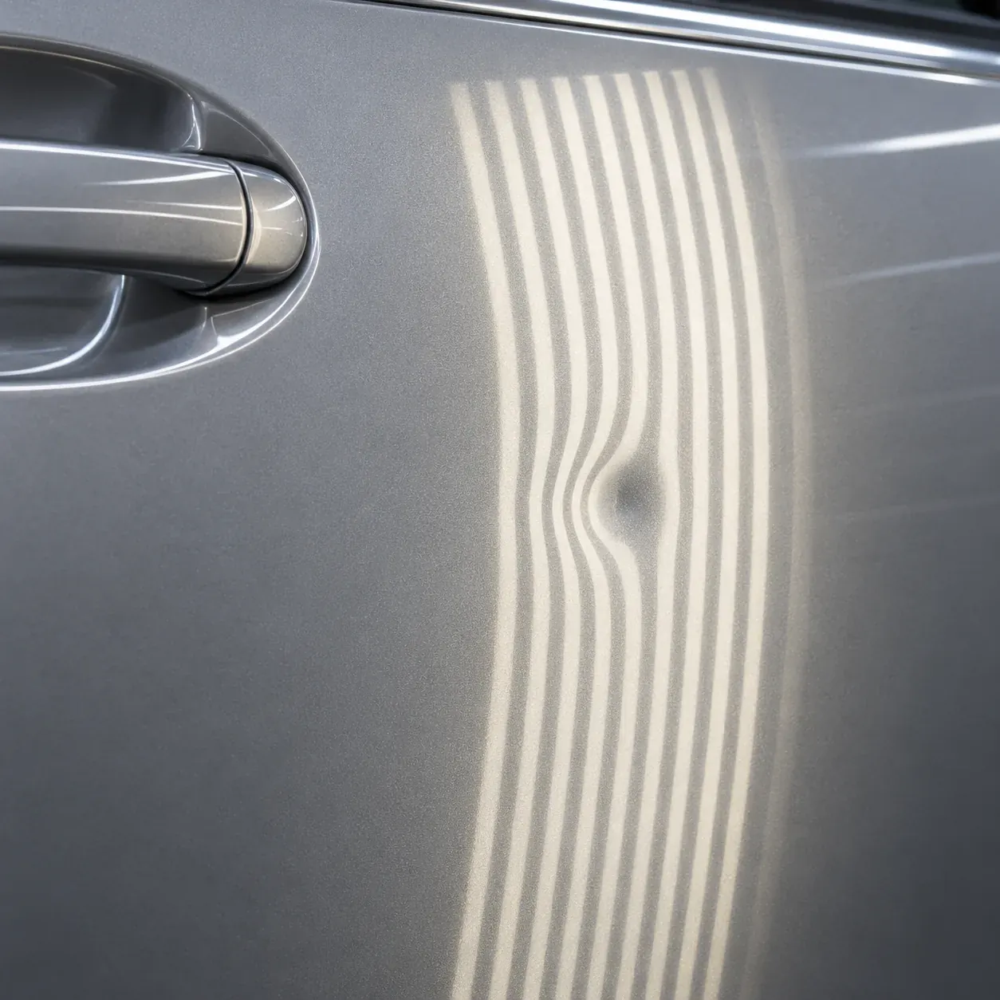
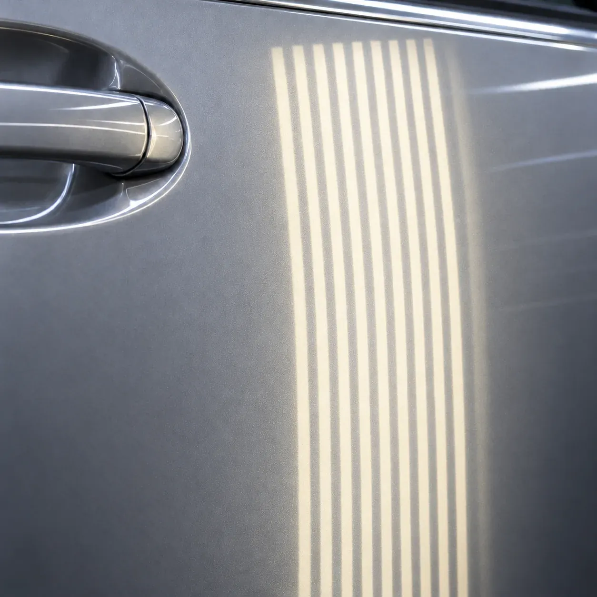

예시 이미지
이럴 때 맡겨요
- 01
주차장에서 문콕을 당해 문짝이 오목하게 눌렸을 때
- 02
도장 손상 없이 판만 찌그러졌을 때
- 03
부딪혀서 도장이 깨지고 판이 우그러졌을 때
- 04
범퍼 아래쪽 도장이 길게 벗겨졌을 때
작업 순서
- 01
눌림 확인
줄무늬 조명판을 비춰 눌린 모양과 깊이를 읽어요.
- 02
펴기
안쪽에서 밀거나 겉에서 당겨 원래 면으로 조금씩 되돌려요.
- 03
면 확인
다시 조명을 비춰 울퉁불퉁한 곳이 없는지 봐요.
- 04
판금도색(필요할 때)
도장이 상했다면 면을 고르게 다듬고 색을 맞춰 칠해요.

예시 이미지
작업 전 · 후


예시 이미지
김프로 시공 기록
블로그에서 더 보기 ↗알아 두면 좋아요
덴트로 안 되는 경우도 있나요?
도장이 깨졌거나, 접힌 자국이 날카롭거나, 공구가 닿지 않는 자리는 덴트만으로 어려워요. 그럴 땐 판금도색을 권해 드려요.
판금 대신 부분도색으로 될 때도 있나요?
범퍼 아래쪽처럼 판은 멀쩡하고 도장만 벗겨졌다면 부분도색으로 충분한 경우가 많아요. 그만큼 비용도 줄어요.
시간은 얼마나 걸려요?
눌린 크기와 자리, 도색 여부에 따라 달라서 차를 보고 알려 드려요.